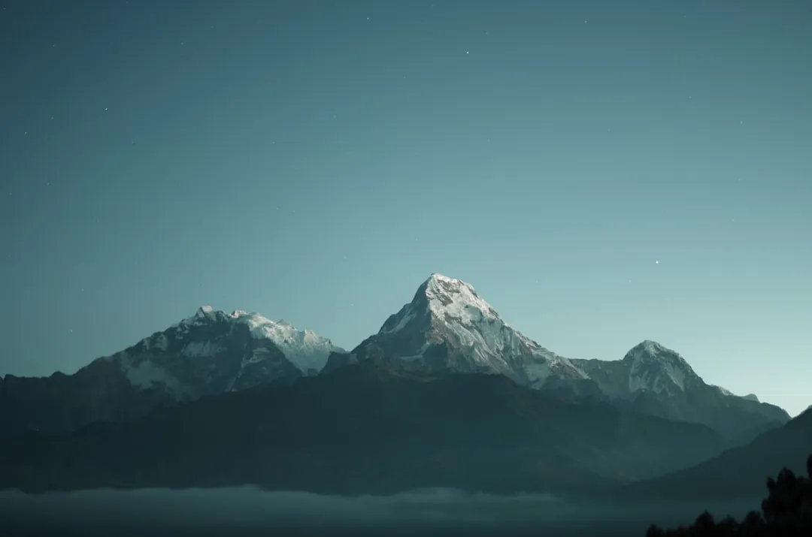

Mammoth Lakes Guide: Year-Round Alpine Adventure
· By GoldenPath Guide Editorial Team
Mammoth Lakes is not a one-season resort. This alpine town in California’s High Sierra holds a different character in every season — snow-covered bowls in winter, blue-green valleys and trails in summer. Rising to 11,059 feet, Mammoth Mountain is the highest ski mountain you can reach by lift in California, and it lives up to its mammoth name. At this height the light does its own work, cutting sharp through air too thin to hold the noise, and the quiet between the pines is the loudest thing around.
However you come for it, come prepared for elevation and changing light.
Winter on Mammoth Mountain
The ski season here stretches from early November into early June, a remarkable run. The mountain averages more than 400 inches of snowfall, and in heavy snow years you can still ski on July 4th. With 3,500 acres of terrain, a 3,100-foot vertical, and a 3-mile run, the scale of the Sierra shows off for beginners and experts alike. Five base lodges each offer ski school, gear rental and ticket windows, so getting on snow is easy. The cold stings your cheeks on the first lift of the morning, and powder hisses under a fresh pair of skis before the crowds arrive.
Terrain Parks & On-Mountain Dining
Freeskiers should make for the Mammoth Unbound terrain parks, which pack more than ten parks, roughly 100 jibs, up to 40 jumps and two halfpipes — so good it’s a training venue for the U.S. freestyle ski and snowboard teams. For lunch, The Mill by the base serves tri-tip and pulled-pork barbecue, while the casual The Lunchbox — a vintage trailer below Roller Coaster Express — serves excellent tacos.
Summer: Mountain Biking & Family Fun
When the snow melts, Mammoth transforms into a mountain bike park with more than 80 miles of lift-served singletrack. Beginners ease in at the Discovery Zone while riders push themselves on ambitious descents. For families, Woolly’s Adventure Summit brings a mountain coaster, a climbing wall and a zipline; in winter that same space becomes snow tubing and ice experiences.
Après-Ski Above the Freeze
On weekend afternoons, catch the après-ski that unfolds like a fashion show on the Canyon Lodge sundeck. Music pours from a DJ booth built out of a converted gondola, and a drink at Lincoln Bar eases the day’s effort. Once night settles in, glide down on the Village Gondola and carry the evening into the village-center restaurants and bars.
Where to Stay
Choose lodging by the terrain that suits you. Mammoth Mountain Inn sits right at Main Lodge; Juniper Springs Resort sits at the base of Eagle Lodge; and Village Lodge puts you in the heart of the village. If you plan to use the lifts in both summer and winter, an Ikon Pass often makes the season pass add a solid value. When the day eases off, the lights of the village glow against the dark Sierra, and the cold settles into something almost warm.
Lift Tickets, Ikon Pass and Rentals
Mammoth runs on the Ikon Pass, and the math favors pass holders: day tickets run $150 to $210 at the window, while the base Ikon Pass near $850 covers unlimited Mammoth days plus partner resorts — five ski days breaks even. Advance online tickets cut 10 to 20 percent off window rates; multi-day bundles cut deeper. The resort's five base lodges each run rental shops at $55 to $75 a day for ski packages, while Main Street shops in town rent equivalent gear near $40 to $55 with overnight ski storage included. Demo and high-performance packages run $70 to $90 and suit strong skiers wanting current models. Children's group lessons start near $180 for the full day including lunch; adult group lessons run $150-plus. Spring season (March through May) pairs the deepest base with $100-to-$130 lift deals and pond-skimming events. Skip holiday-week walk-up purchases — prices peak and lesson slots sell out by 9 a.m.
Summer: Devils Postpile, Lakes and Bike Park
Summer opens a second resort. Devils Postpile National Monument, a 60-foot wall of hexagonal basalt columns, sits 30 minutes from town; the mandatory shuttle from the Mammoth Mountain Adventure Center costs $15 for adults and runs mid-June through Labor Day, with departures every 20 minutes. Rainbow Falls, a 101-foot cascade two miles past the Postpile, makes the combined hike six miles round-trip — carry two liters of water per person. The Lakes Basin's five drive-up lakes rent kayaks and paddleboards at $25 to $40 an hour; Twin Lakes and Lake Mary allow small motorboats. The Mammoth Bike Park lift pass runs $60 to $80 a day with 80-plus miles of downhill trails and rental downhill bikes near $90. The Minaret Vista at 9,265 feet gives the Ansel Adams Wilderness view without the hike. Thunderstorms build most summer afternoons — summit before noon and descend by 1 p.m.
Dining, Hot Springs and Altitude Tips
The Village at Mammoth anchors evenings with steak, sushi and pizza rooms at $25 to $50 per person; the base-lodge cafeterias serve faster lunches near $15 to $20. Old Mammoth Road holds the local breakfast counters — hearty plates at $12 to $18 with lines out the door before 9 a.m. on powder days. Wild Willy's and Hilltop hot springs, 20 to 30 minutes east on Benton Crossing Road, soak free on public land; go at sunrise for steam and solitude, bring a towel and pack out everything. At 8,000-plus feet, altitude hits newcomers: drink a liter of water more than usual daily, go easy on alcohol the first night and expect ski legs to tire 20 percent faster. The free town trolley loops hotels, the Village and Canyon Lodge all winter — skip the $30-plus daily resort parking by riding it. Summer visitors add mosquito repellent for Lakes Basin evenings.